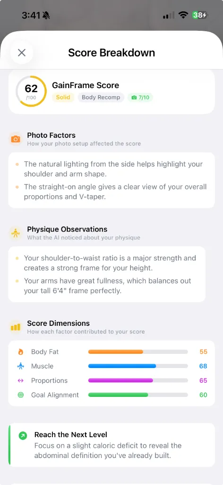

Best Progress Photo Apps for 2026: 5 Options Reviewed
Stop relying on the "Hidden" folder in your Apple camera roll. Compare the top 5 dedicated progress tracking tools, from simple collages to AI-powered body composition analysis.

If you're taking progress photos and saving them to the "Hidden" album on your phone, you're missing out on the best tracking data you have. You endlessly scroll to find a picture from 8 weeks ago to vaguely 'eyeball' how things have changed.
The goal isn't just to take photos, it's to evaluate progress objectively. Whether you are bulking, cutting, or just entering a maintenance phase, there is an app uniquely designed to fit your goals.
Here is a breakdown of the 5 absolute best progress photo apps on the market today. We cover everything from deep analytical tools like GainFrame, macro-forward tools like MyFitnessPal, to the simplest possible collage generators.
1. GainFrame: Best for AI Analysis & Objective Data
Most progress photo apps are just specific folders for images. GainFrame actually turns those images into measurable data points. This is an objective body composition tracker powered by artificial intelligence.

GainFrame doesn't just store pictures. By importing an older gym photo (or using the Guided Recording mode), it scans specific topological markers on your body to calculate body fat percentage, evaluate muscle definition across segments (shoulders vs midsection vs arms), and tracks posture.
The best feature is Deep Dive Compare. You select a previous photo and your most recent photo, and GainFrame provides a side-by-side breakdown identifying precisely what changed. (e.g. "Shoulder width has increased, but tricep definition was lost"). This helps you remove your own subjective biases and body dysmorphia.
Pros:
- Deep AI insights turning pictures into data points.
- Guided recording mode removes the need for tripod timers or mismatched framing.
- Does not store photos on a remote server; data is kept securely on-device unless synced.
Cons:
- Requires photos taken with specific minimal clothing to analyze accurately.
2. Apple Photos (Hidden Album): Best Free Default Option
We have to mention the default choice. At least 60% of people tracking progress use standard Apple Photos and hide the images so their friends don't see them while scrolling.
The greatest advantage is that you already have it installed, and it costs $0. Furthermore, thanks to face/body clustering, it is technically easier to find photos of yourself than it used to be. The privacy is also top-tier, assuming your phone itself is secure.
However, it has absolutely zero analytical utility. It won't help you match the focal length or distance, you can't view two images side-by-side properly, and there are no tracking graphs.
Pros:
- Completely free and built into the device.
- Extremely private and secure.
Cons:
- Zero body composition analysis or side-by-side comparison features.
3. MyFitnessPal: Best for Nutrition-First Tracking
MyFitnessPal is known as the titan of macro counting and diet tracking, but many users completely overlook that it has a built-in progress photo feature.
When you log your weight for the day, you have the option to attach a progress photo to that specific weigh-in entry. The primary advantage here is context. When you look back through your history, the photo is inextricably linked to your specific caloric intake and weight at that exact moment.
But the interface feels like an afterthought. Taking or finding the photos requires digging into secondary menus, and it lacks the precision alignment tools seen in dedicated apps.
Pros:
- Phenomenal for tying visual progress directly to your macros and diet log.
- A single ecosystem if you are already using it for diet.
Cons:
- The photo UI is buried and not the focus of the app.
- Cannot easily create standardized comparison grids.
4. Hevy (or Strong): Best for Workout Loggers
Similar to the MyFitnessPal approach but focused on the weight room. Hevy and Strong are the leading gym measurement tools, logging sets, reps, and overall volume.
You can attach specific pictures to individual workouts. For example, if you hit a massive PR on deadlifts and got an incredible pump, you attach the photo to the workout itself. It acts as an incredible timeline journal of your life in the gym.
Still, like MyFitnessPal, the feature serves as a supplementary attachment rather than an analytical feature. You use it for the journal memory, not to actually evaluate whether your body fat has dropped.
Pros:
- Associates pictures directly with the stimulus (the specific workout) that created them.
- Great community features.
Cons:
- No comparative analysis for body composition.
5. Progress / Collage Makers: Best for Simple Exporting
If you search the App Store for "Progress Photos", you will find dozens of variations on the exact same premise. These are lightweight utilities aimed purely at one task: creating side-by-side Instagram stories.
Typical apps in this category usually feature a ghost-overlay mode — a translucent layer of an older picture you can use to align your body before taking a new one. They excel at allowing you to export those two images as a single file, stitched together beautifully.
The major downside is scope. They are rarely updated, offer no metric tracking, and frequently feature poor privacy practices (uploading local photos to arbitrary third-party servers).
Pros:
- Very fast way to make a side-by-side comparative post for social media.
- Contains basic overlay alignment tools.
Cons:
- Frequent predatory subscription models for low-effort utility.
- No body composition tracking.
How to Choose the Right Progress App
Don't fall into the trap of analysis paralysis. The app you choose largely depends on what kind of fitness phase you are in.
- Are you trying to prove to yourself that it's working? Use GainFrame. It will track whether or not your changes are statistical realities or just lighting tricks, validating your effort.
- Do you just want the journal memories? Use Hevy or MyFitnessPal to attach the image to your daily log.
- Are you sharing exclusively on Instagram? Stick to simple collage makers.
Visual tracking is the most honest truth in fitness. The mirror lies due to dysmorphia, the scale lies due to water weight, but objective visual data tells the whole truth. Choose an app that actually helps you measure it.
GainFrame is now available.
Download GainFrame today and start tracking your true progress.